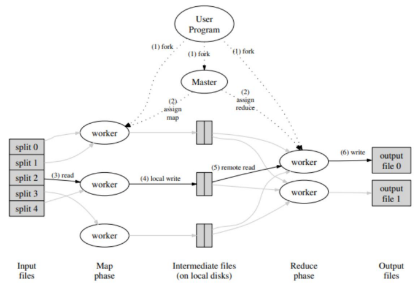
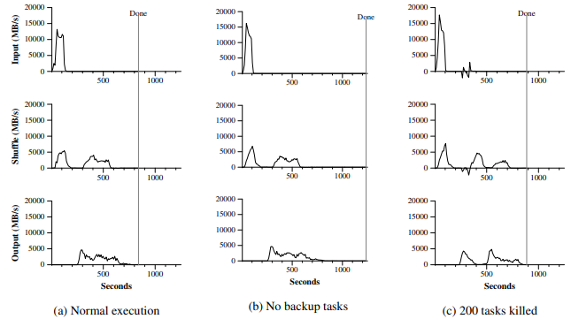

Intro
데이터의 양 증가
large-scale의 데이터들(raw data, web request logs, crawled documents, etc..)
분산된 시스템에서 데이터를 처리하고 배포하는 방법
→ MapReduce = Map+ Reduce
사용자가 쉽게 사용할 수 있는 자동 분배 및 병렬 시스템 제공
Method
Map
key/value 쌍의 input data를 받아 사용자가 작성한 map 함수를 따라 intermediate key/value 쌍을 생성
intermediate key를 사용해 intermediate value을 그룹화하고 Reduce 함수에 전달
Reduce
intermediate key를 통해 같은 key를 가진 값들을 병합해 output file write
Implementation

- MapReduce 라이브러리는 입력 파일을 M 조각으로 분할, 여러 시스템에서 프로그램의 많은 복사본을 만듦
- 그 중 하나는 master, 나머지는 slave. master는 slave에 작업을 할당
- Map task가 할당된 worker가 해당 input split의 key/value 데이터를 map function으로 처리하고 intermediate key/value 쌍 생성해서 memory에 save
- 저장된 쌍은 local disk에 기록되고 R 영역으로 분할됨, local disk에 저장된 쌍의 위치는 master에게 전달, master는 이 위치를 reduce worker에서 전달
- Reduce worker는 위치를 전달 받으면 map worker의 local disk에서 저장된 data를 읽음, 모든 intermediate data를 key를 기준으로 정려라여 동일한 키의 모든 항목을 그룹화, intermediate data 양이 너무 많아서 메모리에 맞지 않으면 외부 정렬 사용
- Reduce worker는 정렬된 intermediate data에 대해 반복, 각 intermediate key에 대해 key와 value를 reduce function으로 전달, reduce 함수의 출력이 최종 output 파일에 추가됨
- 모든 map task와 reduce task가 완료되면 master가 user program을 깨움, 이때 user program의 MapReduce 호출은 user code로 돌아감
Fault Tolerance
Worker Failure
worker는 master에게 주기적으로 (보통 3초) heartbeat를 보내는데
master에서 그 신호를 받지 못하면 worker에 이슈가 생겼다고 판단, 다른 worker에게 일을 재할당
Master Failure
replication이 있다면 master가 주기적으로 master data structure의 체크포인트를 쓰기 때문에 new copy를 시작, 그러나 master가 하나 뿐일 때는 현재 operation은 중단하고 처음부터 다시 작업
Locality
GFS(Google File System)로 부터 관리되는 input data는 machine의 local disk에 저장
GFS는 각 파일을 64MB로 나누고 3개의 replicaiton을 다른 machines에게
MapReduce 클러스터에서 worker의 상당 부분에 대한 작업을 줄이며,
대부분의 입력 데이터를 로컬에서 읽고 네트워크 대역폭을 사용하지 않음
Task Granularity
M개의 map tasks, R개의 reduce tasks로 나누고, M과 R은 대부분 worker 수보다 많음
각 worker는 다양한 다른 tasks를 처리
dynamic load balancing, 실패 시 처리 속도를 높임
Backup Tasks
완료 시간을 지연시키는 ‘straggler’ → 이전 게시글 참고
straggler 처리 위해 MapReduce operation이 거의 완료될 시점에 backup tast 생성
primary task나 backup task 중 하나가 완전히 완료되면 종료
large MapReduce operation의 시간을 줄일 수 있음
ex. sort program에서 backup task가 있을 때가 44% 시간 빠름
Refinements
- Partitioning Function: Map에서 처리된 intermediate key/value 쌍들을 Reducer로 보내기 전에 같은 key를 기준으로 partition
- Ordering Guarantees : 보내진 partition에서 intermediate key/value 쌍들을 오름차순 정렬
- Combiner: Mini reducer. mapper에서 reducer로 가기 전에 미리 값을 합침으로써 연산 속도 향상
- Input and Output Types : 사용자는 reader interface에서 자기가 원하는 input/output types를 설정
- Side-effects : 한 task로 부터 여러 output file을 생성할 수 없음
- Skipping Bad Records : 매우 많은 연산 중 발생하는 bug에 대하여 무시 → 연산 시간 단축
- Local Execution : debugging, profiling, small-scale testing에서 사용할 수 있도록 local execution을 지원
- Status Information : 내부 HTTP 서버를 통해 completed, progressing tasks나 input/intermediate/output file의 크기, 각종 에러 정보 확인
- Counters : MapReduce library의 counter 객체를 사용하여 문서 내 요소의 개수를 셀 수 있고, user code로 반환
Performance

sort
Normal Execution
Input
local disk → mapper
grep보다 2배 느림: intermediate output을 local disk에 기록하는데 시간 절반, grep의 intermediate output은 무시할만 함
Shuffle
mapper → reducer
봉우리 2개: batch 2번 (1700개로 4000개)
Output
reduce task → final output files
Input, shuffle, output 순으로 빠름
locality optimization, output은 복사본 포함 2개 만들기 때문
No Backup Tasks
output에서만 시간 차이
fail 된 machine 5개를 처음부터 다시 돌려서 시간 44% 증가
→ backup task 중요함
200 Tasks Killed
input - 실패한 것 다시 input해줘야 해서 오래 걸림
shuffle: 1500개로 4000개, 봉우리 3개
output: 5% 증가
→ MapReduce의 fault-tolerance의 효과 좋음
Opinion
- 병렬화, fault-tolerance, 지역성 최적화, 로드 밸런싱에 대한 세부사항을 숨기기 때문에 병렬 및 분산 시스템에 대한 경험이 없는 프로그래머도 사용하기 쉬움
- 구글의 웹 검색 서비스, 정렬, 데이터 마이닝, 머신 러닝을 위한 맵리듀스 연산으로 다양한 문제를 쉽게 표현
- 대규모로 확장되는 MapReduce 구현